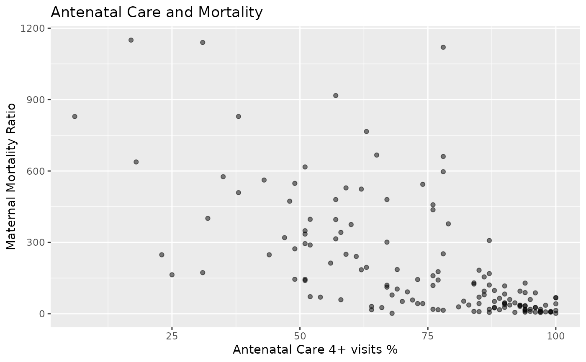

SOWC Maternal and Newborn Health Data.
Source:R/data-sowc_maternal_newborn.R
sowc_maternal_newborn.RdData from UNICEF's State of the World's Children 2019 Statistical Tables.
Format
A data frame with 202 rows and 18 variables.
- countries_and_areas
Country or area name.
- life_expectancy_female
Life expectancy: female in 2018.
- family_planning_1549
Demand for family planning satisfied with modern methods (%) 2013–2018 Women aged 15 to 49.
- family_planning_1519
Demand for family planning satisfied with modern methods (%) 2013–2018 Women aged 15 to 19.
- adolescent_birth_rate
Adolescent birth rate 2013 to 2018.
- births_age_18
Births by age 18 (%) 2013 to 2018.
- antenatal_care_1
Antenatal care (%) 2013 to 2018 At least one visit.
- antenatal_care_4_1549
Antenatal care (%) 2013 to 2018 At least four visits Women aged 15 to 49.
- antenatal_care_4_1519
Antenatal care (%) 2013 to 2018 At least four visits Women aged 15 to 19.
- delivery_care_attendant_1549
Delivery care (%) 2013 to 2018 Skilled birth attendant Women aged 15 to 49.
- delivery_care_attendant_1519
Delivery care (%) 2013 to 2018 Skilled birth attendant Women aged 15 to 19.
- delivery_care_institutional
Delivery care (%) 2013 to 2018 Institutional delivery.
- c_section
Delivery care (%) 2013–2018 C-section.
- postnatal_health_newborns
Postnatal health check(%) 2013 to 2018 For newborns.
- postnatal_health_mothers
Postnatal health check(%) 2013 to 2018 For mothers.
- maternal_deaths_2017
Maternal mortality 2017 Number of maternal deaths.
- maternal_mortality_ratio_2017
Maternal mortality 2017 Maternal Mortality Ratio.
- risk_maternal_death_2017
Maternal mortality 2017 Lifetime risk of maternal death (1 in X).
Examples
library(dplyr)
library(ggplot2)
# List countries and lifetime risk of maternal death (1 in X), ranked
sowc_maternal_newborn %>%
mutate(rank = round(rank(risk_maternal_death_2017), 0)) %>%
select(countries_and_areas, rank, risk_maternal_death_2017) %>%
arrange(rank)
#> countries_and_areas rank risk_maternal_death_2017
#> 1 Chad 1 15
#> 2 South Sudan 2 18
#> 3 Sierra Leone 4 20
#> 4 Somalia 4 20
#> 5 Nigeria 5 21
#> 6 Central African Republic 6 25
#> 7 Niger 7 27
#> 8 Mauritania 8 28
#> 9 Mali 9 29
#> 10 Gambia 10 31
#> 11 Guinea-Bissau 12 32
#> 12 Liberia 12 32
#> 13 Afghanistan 14 33
#> 14 Burundi 14 33
#> 15 Cote d'Ivoire 16 34
#> 16 Democratic Republic of the Congo 16 34
#> 17 Guinea 17 35
#> 18 United Republic of Tanzania 18 36
#> 19 Cameroon 19 40
#> 20 Eritrea 20 46
#> 21 Benin 22 49
#> 22 Uganda 22 49
#> 23 Ethiopia 24 55
#> 24 Zimbabwe 24 55
#> 25 Togo 25 56
#> 26 Burkina Faso 26 57
#> 27 Congo 28 58
#> 28 Lesotho 28 58
#> 29 Malawi 29 60
#> 30 Senegal 30 65
#> 31 Madagascar 31 66
#> 32 Equatorial Guinea 33 67
#> 33 Haiti 33 67
#> 34 Mozambique 33 67
#> 35 Angola 35 69
#> 36 Eswatini 36 72
#> 37 Sudan 37 75
#> 38 Kenya 38 76
#> 39 Ghana 39 82
#> 40 Comoros 40 83
#> 41 Gabon 42 93
#> 42 Zambia 42 93
#> 43 Rwanda 43 94
#> 44 Djibouti 44 140
#> 45 Namibia 44 140
#> 46 Yemen 46 150
#> 47 Sao Tome and Principe 48 170
#> 48 Timor-Leste 48 170
#> 49 Lao People's Democratic Republic 50 180
#> 50 Pakistan 50 180
#> 51 Myanmar 52 190
#> 52 Papua New Guinea 52 190
#> 53 Solomon Islands 53 200
#> 54 Bolivia (Plurinational State of) 56 220
#> 55 Botswana 56 220
#> 56 Cambodia 56 220
#> 57 Guyana 56 220
#> 58 Nepal 58 230
#> 59 Indonesia 59 240
#> 60 Bangladesh 60 250
#> 61 Bhutan 60 250
#> 62 Algeria 62 270
#> 63 India 64 290
#> 64 Kiribati 64 290
#> 65 Paraguay 64 290
#> 66 Philippines 66 300
#> 67 Iraq 67 320
#> 68 Guatemala 70 330
#> 69 South Africa 70 330
#> 70 Suriname 70 330
#> 71 Vanuatu 70 330
#> 72 Venezuela (Bolivarian Republic of) 70 330
#> 73 Micronesia (Federated States of) 73 370
#> 74 Nicaragua 74 380
#> 75 Dominican Republic 75 410
#> 76 Kyrgyzstan 76 480
#> 77 Peru 76 480
#> 78 Tonga 78 540
#> 79 Honduras 80 560
#> 80 Morocco 80 560
#> 81 Saint Lucia 81 580
#> 82 Libya 82 590
#> 83 Samoa 82 590
#> 84 Jamaica 84 600
#> 85 Democratic People's Republic of Korea 85 620
#> 86 Colombia 86 630
#> 87 Ecuador 87 640
#> 88 Cabo Verde 88 670
#> 89 Mongolia 89 710
#> 90 Egypt 90 730
#> 91 Jordan 90 730
#> 92 Panama 92 750
#> 93 Saint Vincent and the Grenadines 92 750
#> 94 Seychelles 94 790
#> 95 Bahamas 95 820
#> 96 Maldives 96 840
#> 97 Trinidad and Tobago 96 840
#> 98 State of Palestine 98 880
#> 99 Brazil 99 940
#> 100 El Salvador 100 960
#> 101 Tunisia 101 970
#> 102 Fiji 102 1000
#> 103 Syrian Arab Republic 102 1000
#> 104 Argentina 105 1100
#> 105 Belize 105 1100
#> 106 Viet Nam 105 1100
#> 107 Antigua and Barbuda 108 1200
#> 108 Mauritius 108 1200
#> 109 Uzbekistan 108 1200
#> 110 Mexico 110 1300
#> 111 Sri Lanka 110 1300
#> 112 Tajikistan 112 1400
#> 113 Lebanon 114 1600
#> 114 Malaysia 114 1600
#> 115 Oman 114 1600
#> 116 Azerbaijan 117 1700
#> 117 Brunei Darussalam 117 1700
#> 118 Grenada 117 1700
#> 119 Cuba 119 1800
#> 120 Costa Rica 121 1900
#> 121 Georgia 121 1900
#> 122 Thailand 121 1900
#> 123 Armenia 123 2000
#> 124 China 124 2100
#> 125 Saudi Arabia 125 2300
#> 126 Barbados 126 2400
#> 127 Iran (Islamic Republic of) 127 2600
#> 128 Turkey 128 2800
#> 129 Uruguay 129 2900
#> 130 Bahrain 130 3000
#> 131 United States 130 3000
#> 132 Latvia 132 3100
#> 133 Russian Federation 132 3100
#> 134 Kazakhstan 134 3500
#> 135 Romania 135 3600
#> 136 Ukraine 136 3700
#> 137 Albania 137 3800
#> 138 Republic of Moldova 138 3900
#> 139 Kuwait 139 4200
#> 140 Turkmenistan 140 4400
#> 141 Chile 141 4600
#> 142 Qatar 142 5000
#> 143 Serbia 143 5800
#> 144 Canada 144 6100
#> 145 New Zealand 144 6100
#> 146 Hungary 146 6200
#> 147 Estonia 147 6900
#> 148 Bulgaria 148 7000
#> 149 France 149 7200
#> 150 Lithuania 150 7500
#> 151 Australia 152 8200
#> 152 Bosnia and Herzegovina 152 8200
#> 153 Republic of Korea 153 8300
#> 154 United Kingdom 154 8400
#> 155 North Macedonia 155 9000
#> 156 Croatia 156 9100
#> 157 Slovenia 157 9300
#> 158 Germany 158 9400
#> 159 Montenegro 160 9900
#> 160 Singapore 160 9900
#> 161 Malta 161 10200
#> 162 Portugal 162 10700
#> 163 Israel 163 10800
#> 164 Cyprus 164 11000
#> 165 Belgium 165 11200
#> 166 Ireland 166 11300
#> 167 Netherlands 167 11900
#> 168 Slovakia 168 12600
#> 169 Sweden 168 12600
#> 170 Austria 170 13500
#> 171 Switzerland 171 13900
#> 172 Luxembourg 172 14300
#> 173 Iceland 173 14400
#> 174 Denmark 174 16200
#> 175 Japan 175 16700
#> 176 Czechia 176 17900
#> 177 United Arab Emirates 176 17900
#> 178 Finland 178 20900
#> 179 Spain 179 21500
#> 180 Belarus 180 23800
#> 181 Norway 181 25700
#> 182 Greece 182 26900
#> 183 Poland 183 30300
#> 184 Italy 184 51300
#> 185 Andorra 185 NA
#> 186 Anguilla 186 NA
#> 187 British Virgin Islands 187 NA
#> 188 Cook Islands 188 NA
#> 189 Dominica 189 NA
#> 190 Holy See 190 NA
#> 191 Liechtenstein 191 NA
#> 192 Marshall Islands 192 NA
#> 193 Monaco 193 NA
#> 194 Montserrat 194 NA
#> 195 Nauru 195 NA
#> 196 Niue 196 NA
#> 197 Palau 197 NA
#> 198 Saint Kitts and Nevis 198 NA
#> 199 San Marino 199 NA
#> 200 Tokelau 200 NA
#> 201 Turks and Caicos Islands 201 NA
#> 202 Tuvalu 202 NA
# Graph scatterplot of Maternal Mortality Ratio 2017 and Antenatal Care 4+ Visits %
sowc_maternal_newborn %>%
select(antenatal_care_4_1549, maternal_mortality_ratio_2017) %>%
remove_missing(na.rm = TRUE) %>%
ggplot(aes(antenatal_care_4_1549, maternal_mortality_ratio_2017)) +
geom_point(alpha = 0.5) +
labs(
title = "Antenatal Care and Mortality",
x = "Antenatal Care 4+ visits %",
y = "Maternal Mortality Ratio"
)
